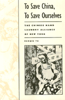

Chinese laundry workers unite to fight racism and economic discrimination
Chinese laundry workers unite to fight racism and economic discrimination


 Chinese laundry workers unite to fight racism and economic discrimination
Chinese laundry workers unite to fight racism and economic discrimination

|  |
To Save China, To Save OurselvesThe Chinese Hand Laundry Alliance of New YorkRenqiu Yupaper EAN: 978-1-56639-395-9 (ISBN: 1-56639-395-7) |
Outstanding Academic Title, Choice, 1994
Philadelphia Book Clinic Certificate of Award, 1993
Outstanding Book in History Award, Association for Asian American Studies, 1993
"Through extensive research of Chinese newspapers, such as China Daily News, and internal organizational documents, leavened with interviews of two dozen elderly Chinese laundrymen, Yu has reconstructed the political history o the Chinese Hand Laundry Alliance (CHLA).... Aside from documenting the history of an important labor organization and giving voice to the oppressed Chinese laundrymen, Yu has written one of the few works that focus on the Chinese on the East Coast during the Twentieth century."
—The Journal of Asian Studies
Combining archival research in Chinese language sources with oral history interviews, Renqiu Yu examines the Chinese Hand Laundry Alliance (CHLA), an organization that originated in 1933 to help Chinese laundry workers break their isolation in American society. Yu brings to life the men who labored in New York laundries, depicting their meager existence, their struggles against discrimination and exploitation, and their dreams of returning to China. The persistent efforts of the CHLA succeeded in changing the workers' status in American society and improving the image of the Chinese among the American public.
Yu is especially concerned with the political activities of the CHLA, which was founded in reaction to proposed New York City legislation that would have put the Chinese laundries out of business. When the conservative Chinese social organization could not help the launderers, they broke with tradition and created their own organization. Not only did the CHLA defeat the legislative requirements that would have closed them down, but their "people's diplomacy" won American support for China during its war with Japan. The CHLA staged a campaign in the 1930s and 40s which took as its slogan, "To Save China, To Save Ourselves." Focusing on this campaign, Yu also examines the complex relationship between the democratically oriented CHLA and the Chinese American left in the 1930s.
"Yu's work, well-written and thoroughly researched, chronicles the CHLA's diverse successes and failures. To Save China is a good addition to the literature on Asian immigrants...."
—Choice
"Drawing upon Chinese-language sources, oral interviews, and FBI files, Yu has produced a rich and complex history of the CHLA."
—The Journal of American History
"[T]his study is a major contribution to Chinese American history, Asian American Studies, and American immigration history."
—Amerasia Journal
Acknowledgments
Chinese Names and Transliteration
Introduction
1. Chinese Laundrymen in New York City
2. The Emergence of the CHLA
3. The Alliance Is for the Laundrymen
4. "To Save China, To Save Ourselves"
5. "The People's Diplomacy"
6. The Struggle Over a Penny
7. Where Is the Gold Mountains?
Conclusion
Notes
Bibliography
Index
Renqiu Yu is Associate Professor of History in the Division of Humanities at Purchase College, State University of New York.
Asian American Studies
American Studies
Labor Studies and Work
Asian American History and Culture, edited by K. Scott Wong, Linda Trinh V�, and Cathy Schlund-Vials.
Founded by Sucheng Chan in 1991, the Asian American History and Culture, series has sponsored innovative scholarship that has redefined, expanded, and advanced the field of Asian American studies while strengthening its links to related areas of scholarly inquiry and engaged critique. Like the field from which it emerged, the series remains rooted in the social sciences and humanities, encompassing multiple regions, formations, communities, and identities. Extending the vision of founding editor Sucheng Chan and emeriti editor Michael Omi and David Palumbo-Liu, series editors K. Scott Wong, Linda Trinh V�, and Cathy Schlund-Vials continue to develop a foundational collection that embodies a range of theoretical and methodological approaches to Asian American studies.
© 2015 Temple University. All Rights Reserved. This page: http://www.temple.edu/tempress/titles/958_reg.html.